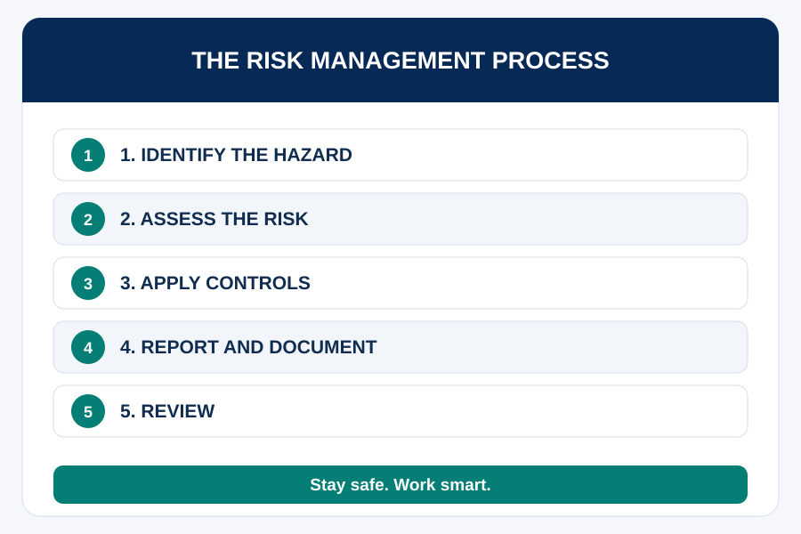

Purpose of the Session
Develop the knowledge and practical skills to recognise workplace hazards, understand basic Occupational Health and Safety (OHS) requirements and respond appropriately to unsafe situations. Explore employer and employee duties under South Africa’s Occupational Health and Safety Act 85 of 1993, workplace safety procedures and risks in physical and digital environments.
The session promotes a proactive safety culture based on hazard recognition, established procedures, incident reporting and prevention of workplace injury and ill health.
Learning Outcomes
- Explain the purpose of OHS legislation and workplace safety policies.
- Identify physical, ergonomic, environmental and psychosocial hazards.
- Describe employer and employee responsibilities under the OHS Act.
- Distinguish a hazard, risk, incident and near miss.
- Respond appropriately to unsafe conditions and emergencies.
Time allocation: 1 hour
At the office entrance you notice a wet floor, cables across a walkway, boxes blocking an exit and a colleague lifting a heavy box with poor posture. How many hazards can you identify? Which needs immediate attention? What could happen if no one reports them?
Understanding Occupational Health and Safety
OHS prevents work-related injury and ill health through identifying hazards, assessing risks and implementing suitable controls. South Africa’s Occupational Health and Safety Act 85 of 1993 sets important duties for the safety of workers and others affected by workplace activities. Organisational OHS policies explain reporting, equipment use, emergency response and safety requirements.
Key OHS concepts
| Concept | Meaning | Example |
|---|---|---|
| Hazard | Something with potential to cause harm | An exposed electrical wire |
| Risk | Likelihood and consequences of harm | Someone could contact the wire |
| Incident | Event that causes or could cause harm | A worker slips on a wet floor |
| Near miss | Event that could have caused harm but did not | Someone trips over a cable without injury |
| Control measure | Action eliminating or reducing risk | Safely removing a cable from a walkway |
Employer and Employee Responsibilities
Employer responsibilities
Section 8 of the OHS Act establishes a general duty, as far as reasonably practicable, to provide and maintain a working environment safe and without risk to employees’ health. Relevant responsibilities include hazard identification and controls, training, instruction, supervision, safe equipment and reporting procedures. Precise legal duties depend on the circumstances and applicable regulations.
Employee responsibilities
Section 14 includes taking reasonable care of one’s own and others’ safety, cooperating with the employer and reporting specified unsafe or unhealthy situations. Interns should follow instructions, use equipment properly, report hazards and near misses, avoid unnecessary risks and ask for guidance when unsure.
Workplace Hazard Hunt
Complete this activity in the interactive learning experience.
Open Interactive Activity →Debrief: Interns must not attempt repairs or handle dangerous equipment beyond their training or authority. Follow emergency procedures and seek appropriate assistance when danger is serious or immediate.
Risk Prevention, Incident Reporting and Emergency Response

Preventing hazards
Prioritise eliminating hazards where reasonably practicable. Depending on the circumstances, controls may include removing a hazard, substituting safer processes, installing safeguards, introducing safe procedures and supervision, and using appropriate personal protective equipment (PPE). PPE should not automatically be the first or only control.
Reporting incidents and near misses
Near misses can reveal safety weaknesses before injury occurs. Know who receives reports, how to raise urgent concerns, where forms are located, how to record facts accurately and how to follow up unresolved hazards. Legal reporting requirements vary; follow organisational procedures and applicable law.
Emergency response
- Raise the alarm and contact designated emergency responders.
- Follow the workplace emergency or evacuation plan.
- Avoid entering dangerous areas or attempting tasks beyond your training.
- Assist only within your training and without creating further danger.
- Once safe, report the incident through the proper channels.
Facilitator reminder: Emergency procedures, routes, assembly points, first-aid arrangements and contact numbers must be specific to the premises.
Activity 8.2.2: Safety First — Respond to the Incident
Safety First — Respond to the Incident
Complete this activity in the interactive learning experience.
Open Interactive Activity →Checklist and Reflection
Checklist
ePortfolio Reflection
ePortfolio Reflection
Complete this activity in the interactive learning experience.
Open Interactive Activity →Recommended and Additional Reading
Return to the course menu.